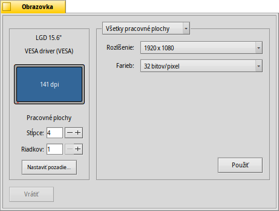

Slovenčina
Slovenčina Français
Français Deutsch
Deutsch Italiano
Italiano Русский
Русский Español
Español Svenska
Svenska 日本語
日本語 Українська
Українська 中文 ［中文］
中文 ［中文］ Português
Português Suomi
Suomi Magyar
Magyar Português (Brazil)
Português (Brazil) English
English Obrazovka
Obrazovka
| Panel: | ||
| Umiestnenie: | /boot/system/preferences/Screen | |
| Nastavenia: | ~/config/settings/system/app_server/workspaces ~/config/settings/kernel/drivers/vesa - Iba keď beží v režime VESA. ~/config/settings/Screen_data - Ukladá pozíciu okna panelu. |
Každá z vašich pracovných plôch môže mať svoje vlastné rozlíšenie, farebnú hĺbku a obnovovaciu frekvenciu.
Menu v hornej časti určuje, či sa zmeny aplikujú na všetky alebo iba na aktuálnu pracovnú plochu. V závislosti na vašej grafickej karte ponúkajú ostatné menu všetky nastavenia podporovaného rozlíšenia, farebnej hĺbky a obnovovacej frekvencie.
Po stlačení tlačidla sa grafický režim zmení a objaví sa upozornenie, ktoré sa vás pýta, či chcete zmeny ponechať alebo zrušiť. Ak na upozornenie neodpoviete, grafický režim sa po 12 sekundách vráti na pôvodné nastavenia. Možno ste upozornenie nevideli, lebo váš monitor nepodporuje dané nastavenia.
Vľavo vidíte znázornenie vašej obrazovky spolu s výrobcom a jej rozlíšením v bodoch na palec (dpi). Prenesením myši nad ňu zobrazí sa popis s názvom grafickej karty, ak je podporovaná ovládačom. Inak sa vypíše iba „VESA“, čo je záložné riešenie fungujúce na každom hardvéri.
Tlačidlo vráti nastavenia, ktoré boli aktívne v momente spustenia nastavení Obrazovky.
Vľavo dole môžete nastaviť počet pracovných plôch a usporiadať ich do stĺpcov a radov a taktiež otvoriť nastavenia Pozadí.